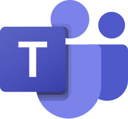
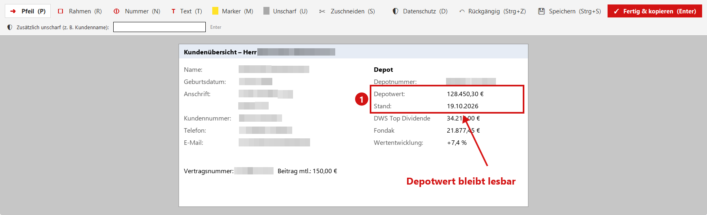
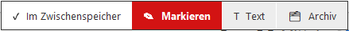
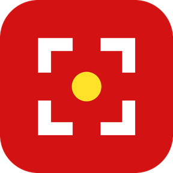

Ein Klick.
Ein Screenshot.
Und die KI versteht dich.
Knips macht dein Bildschirmfoto, den Screenshot, mit einem Klick. Einfügen, fertig. Deine KI sieht sofort, was du siehst.

Teams
Beispiel mit erfundenen Daten: ein Druck auf „D“, und alles Persönliche ist unscharf.
Knips in zwei Minuten
Echte Fälle, von der Fehlermeldung bis zu den Kundendaten.
Alle Daten im Video sind erfunden.
Alles, was du beim Arbeiten mit KI brauchst
Und nichts, was dich aufhält.
Eine Taste für alles
Bereich ziehen, Fenster anklicken oder ganzer Bildschirm. Das Bild liegt sofort im Zwischenspeicher.
Datenschutz auf Knopfdruck
Name, Geburtsdatum, Anschrift, Kunden- und Vertragsnummern, Mail, Telefon, IBAN werden unscharf. Beträge bleiben stehen.
Markieren wie gewohnt
Pfeil, Rahmen, Nummern, Text, Textmarker, Unscharf, Zuschneiden. Alles nachträglich verschiebbar.
Text statt Bild
Fehlermeldungen, Scans, Folien: Knips liest den Text heraus. Die Texterkennung läuft auf deinem Rechner.
Scroll-Screenshot
Für Seiten, die länger sind als der Bildschirm: Knips scrollt selbst nach unten, macht ein ganzes Bild daraus – auf Wunsch als PDF, das die KI Seite für Seite scharf liest.
Archiv
Jeder Screenshot wird aufgehoben, nach Tagen sortiert. Ein Klick legt ihn wieder in den Zwischenspeicher.
In einer Minute eingerichtet
Kein Konto, kein Passwort. Bestellnummer und Lizenzschlüssel einmal einfügen, das war es.
Gratis testen oder kaufen
Auf der Danke-Seite lädst du Knips herunter und öffnest die Datei.
Windows-Hinweis wegklicken
Zeigt Windows „Der Computer wurde geschützt“: „Weitere Informationen“ → „Trotzdem ausführen“. Das ist bei neuen Programmen normal. Am Mac: Systemeinstellungen → „Datenschutz & Sicherheit“ → „Trotzdem öffnen“.
Freischalten und loslegen
Bestellnummer und Schlüssel von der Danke-Seite einfügen. Dann Strg + Num 1, Bereich ziehen, Strg + V. Am Mac: ⌃ ⌥ 1 und ⌘ + V.

Nach jedem Screenshot entscheidest du in einem Klick: einfügen, markieren, Text herauslesen oder ins Archiv.
Die Tasten
„Num“ ist der Ziffernblock rechts. Alles geht auch per Maus über das Knips-Symbol bei der Uhr.
| Screenshot | Strg + Num 1 |
| Screenshot und gleich markieren | Strg + Num 2 |
| Text erkennen | Strg + Num 3 |
| Screenshot in 3 Sekunden (für offene Menüs) | Strg + Num 4 |
| Scroll-Screenshot (scrollt selbst) | Strg + Num 5 |
| Zentrale und Archiv | Strg + Num 0 |
Für dein Stream Deck
Eine Taste drücken, Knips ist da. Die Taste schickt Strg + Num 1 selbst, du brauchst dafür nicht einmal einen Ziffernblock.

Fertige Taste
Bild und Tastenkürzel sind schon drin.
- Knips testen oder kaufen, dann die fertige Knips-Taste auf der Danke-Seite herunterladen.
- Stream-Deck-Programm öffnen und die Datei auf eine freie Taste ziehen. Oder: Rechtsklick auf die freie Taste → „Aktion importieren …“.
- Taste drücken, Bereich ziehen, mit Strg + V einfügen.
Braucht Stream Deck ab Version 6.8.
Selbst anlegen
Dauert eine Minute, falls du es lieber selbst machst.
- Rechts in der Liste System aufklappen.
- Hotkey auf eine freie Taste ziehen.
- Ins Feld „Hotkey“ klicken und Strg + Num 1 drücken.
Bleibt das Feld leer? Dann hat Knips das Kürzel geschnappt. Knips kurz beenden (Knips-Symbol bei der Uhr → Beenden), Kürzel eintragen, Knips über das Startmenü wieder starten.
Tastenbild: Rechtsklick auf das Bild der Taste → „Bilddatei auswählen“.
Das fertige Tastenbild liegt auf deiner Danke-Seite, egal ob du testest oder kaufst.
Noch kein Stream Deck? Ich arbeite mit dem Stream Deck XL. Zu meiner Ausstattung →
Was ist neu
Knips wird laufend besser. Updates kommen von selbst, ein Klick genügt.
Kleine Verbesserungen und Fehler behoben.
Neu: PDF schwärzen. PDF auf das Knips-Symbol ziehen, Knips legt schwarze Balken über Namen, Adresse, IBAN und Co., du schaust kurz drüber und sicherst ein neues PDF, in dem der Text wirklich weg ist. Dazu: Knips 14 Tage gratis testen, nur mit Name und E-Mail. Und das Knips-Partnerprogramm: Knips mit einem Klick weitergeben (WhatsApp, E-Mail, LinkedIn, Xing und mehr, auch per QR-Code) und als Partner 10 % von jedem Kauf bekommen.
Datenschutz erkennt jetzt auch Tabellen: Stehen oben „Name“, „Vorname“ oder „Geburtsdatum“, wird alles darunter unkenntlich, z. B. die Personen in einer Kunden-Akte. Und neu in den Einstellungen: Du wählst selbst, in welchen Ordner deine Screenshots kommen.
Neuer Look: ruhiger, moderner und aus einem Guss. Alle Fenster und Menüs sehen jetzt gleich aus. Knöpfe und Tasten bleiben, wo du sie kennst.
Neu oben in der Zentrale: „Tastenkürzel ?“. Alle Tasten auf einen Blick, schön übersichtlich, für den Screenshot und zum Bearbeiten. Geht auch mit der Taste ?.
Persönlicher: eigenes Profil mit Bild und Namen, Knips begrüßt dich. Neues und Updates zeigt eine kleine Sprechblase, jede Version hat ihr Datum, und die Knöpfe oben tragen die gewohnten Windows-Symbole.
Dein neuer Screenshot liegt in der Zentrale sofort groß zum Bearbeiten da. Und links bleibt die Liste kurz: Heute, Gestern, Letzte 7 Tage, Monate, Jahre. Gelöscht wird nichts.
Neu in der Zentrale: „💡 Wunsch oder Problem“. Screenshot anklicken oder eine Sprachnachricht aufnehmen, „Senden“, fertig. Es landet direkt bei uns, die Antwort kommt per Mail.
Oben rechts in der Zentrale: „✨ Neuigkeiten“ mit rotem Punkt bei Neuerungen, und ein roter Knopf „⇩ Update“, sobald eine neue Version wartet.
Klick auf das Knips-Symbol bei der Uhr öffnet die Zentrale. Scroll-Screenshot klappt auch auf Notebooks lückenlos.
„Immer unkenntlich“: Kundennamen und Firmen einmal eintragen, Knips macht sie überall unscharf.
Danach liegt dein neuester Screenshot in der Zentrale gleich zum Bearbeiten bereit.
Scroll-Screenshots als PDF speichern oder direkt für die KI in den Zwischenspeicher legen.
Kurz gefragt
Die Antworten auf das, was die meisten wissen wollen.
Was kostet Knips?
Die ersten 14 Tage nichts, ohne Zahlungsdaten. Danach 19 € im Jahr oder einmalig 47 €, jeweils mit allen Updates. Wer Knips schon vor dem Verkaufsstart hatte, behält es kostenlos.
Was passiert nach 14 Tagen?
Knips fragt dich, ob du kaufen willst. Es läuft nichts automatisch weiter und kostet nichts. Deine Bilder bleiben auf deinem Rechner.
Schickt Knips meine Bilder irgendwohin?
Nein. Deine Screenshots bleiben auf deinem Rechner. In die KI kommt nur, was du selbst mit Strg + V einfügst.
Was passiert, wenn ich kündige?
Knips läuft bis zum Ende deines bezahlten Jahres. Danach machst du keine neuen Screenshots mehr. Deine Bilder bleiben auf deinem Rechner und erreichbar.
Geht das auf meinem Firmen-PC?
Meistens ja: Knips braucht keine Administrator-Rechte. Sperrt deine Firma neue Programme, hilft deine IT.
Mein Laptop hat keinen Ziffernblock
Rechtsklick auf das Knips-Symbol bei der Uhr → „Ausschnitt“ reicht, oder du legst dir in den Einstellungen eine eigene Taste fest.
Und auf dem Mac?
Ja, Knips läuft auch am Mac, mit derselben Lizenz. Auf der Danke-Seite holst du dir die Mac-Fassung. Beim ersten Start fragt der Mac, ob Knips den Bildschirm sehen darf: einmal erlauben, fertig.
Knips holen
Such dir aus, was besser zu dir passt. Dein Wunsch landet direkt bei mir.
Lieber erst ausprobieren? 14 Tage gratis testen →